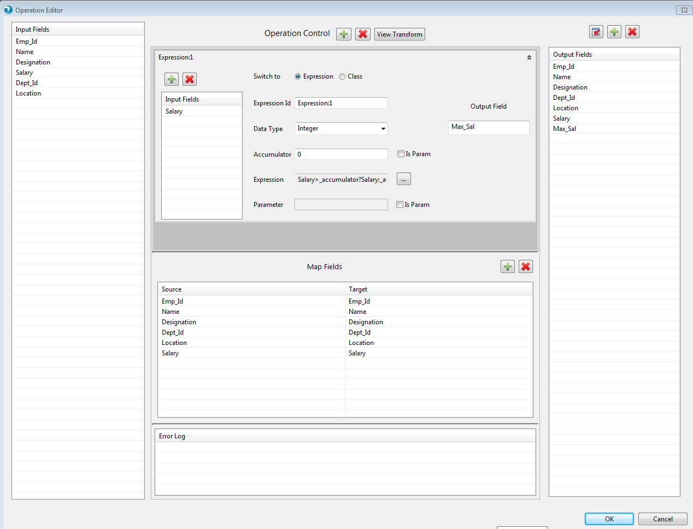
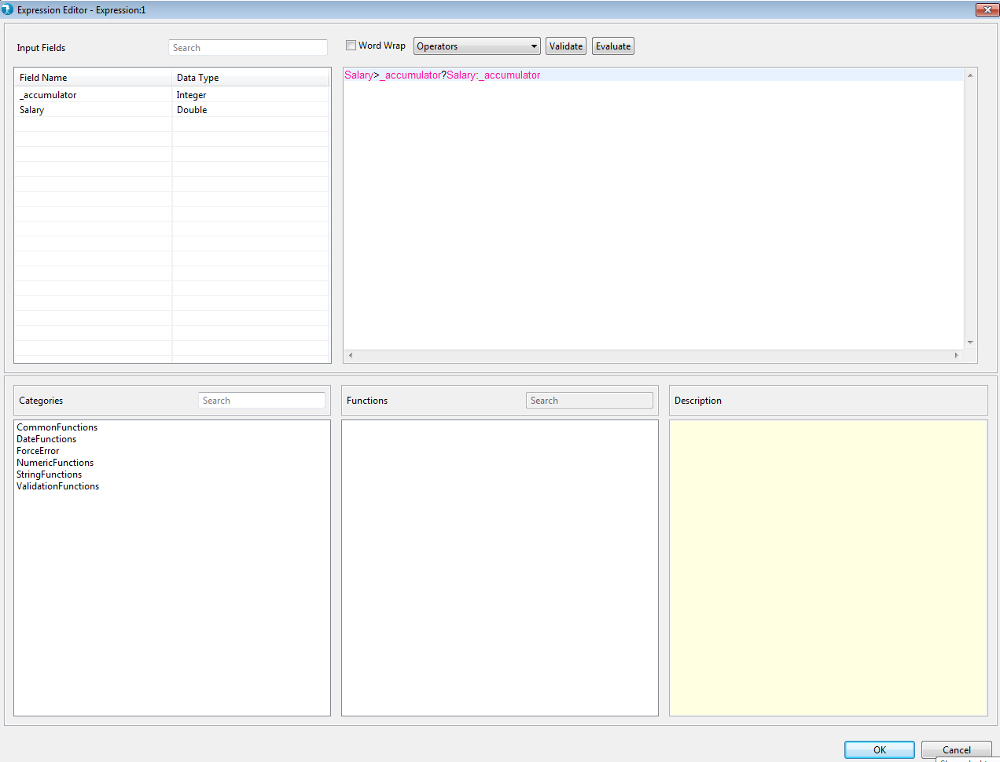
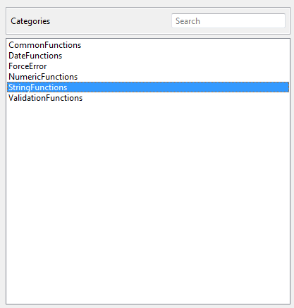
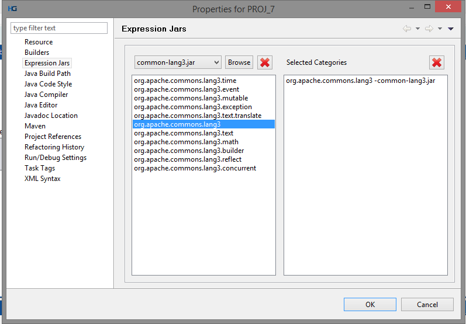
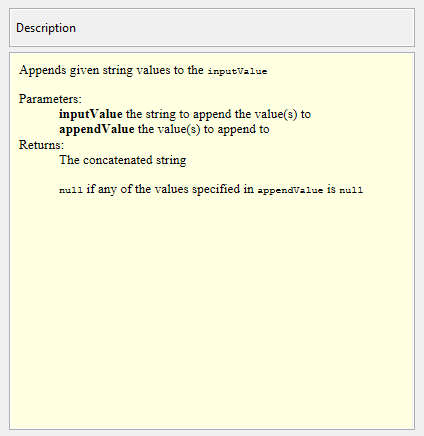

The Accumulator Field is required for the computation to be performed on aggregation field based on key field used for grouping of records.
As aggregation operations are performed on a group of tuples, a variable Accumulator will be used to store all temporary values.
value obtained by evaluating the expression exposed to a tuple will be stored in this Accumulator variable and this stored value will be available when evaluating the next tuple.
Based on Expression to be performed on input field, user need to select the Datatype of Accumulator field.
This Accumulator variable will be initialized to a user provided value before starting processing of each group of tuple.
The Expression Editor provides a full-fledged IDE editing experience that includes IntelliSense and contextual highlighting which enables you to create expression manually or by using drag and drop functionality. Expression can be validated using JAVA compiler after it is entered to ensure if your expression is syntactically correct.

Fig 1
Expression Editor has following features:
- Fields pane:Displays user selected input fields from available schema to be used in expression.

- Category pane :Category are the classes under which built in or user defined functions are defined.

- Function Pane:Displays the list of functions for selected category which can be drag and drop on expression pane or on evaluate window to create/modify the expression.
You can use search box in pane to search for functions that match the characters that you type.

You can also include user defined functions and category (classes) by registering external jars.
User can register the external jars from project properties window.
When user selects the Expression Jars option on property window (left pane) Expression jar's window will be displayed (on right pane ) as shown in below Snapshot 8, through which user will able to register external jars that he / she may requires while writing expressions .
Packages from the jars will displayed to user, user selected packages or class will be displayed in category pane and functions with respect to those classes will be displayed in function pane.
While batch run, user needs to update the property file at installation path with all the packages that he/she needs registered.

- Function Description pane:Displays usage of functions as specified in the java doc description.

- Operator list:Displays the list of built-in operators that you can use to create the expression.
- Expression pane:To build an expression, here in this pane you can type or drag and drop the items from other pane.

- Validate expression:Click validate to determine whether the syntax of expression is correct.
- Evaluate Expression Window :Click Evaluate to evaluate an expression. Evaluating an expression lets you immediately see the output so that you can verify and determine if the logic is correct without running complete graph. You can provide the constant value as a test data and can modify the expression based on the results displayed in output pane on this window.

- Word wrap:Wrap the expression written in expression pane.
- Ok button:will apply and confirm the defined expressions for single particular output field and will close the editor.
- Close button:will not apply or save the defined expression and will close the editor by showing warning message to user if he really want to close editor without retaining the expression.